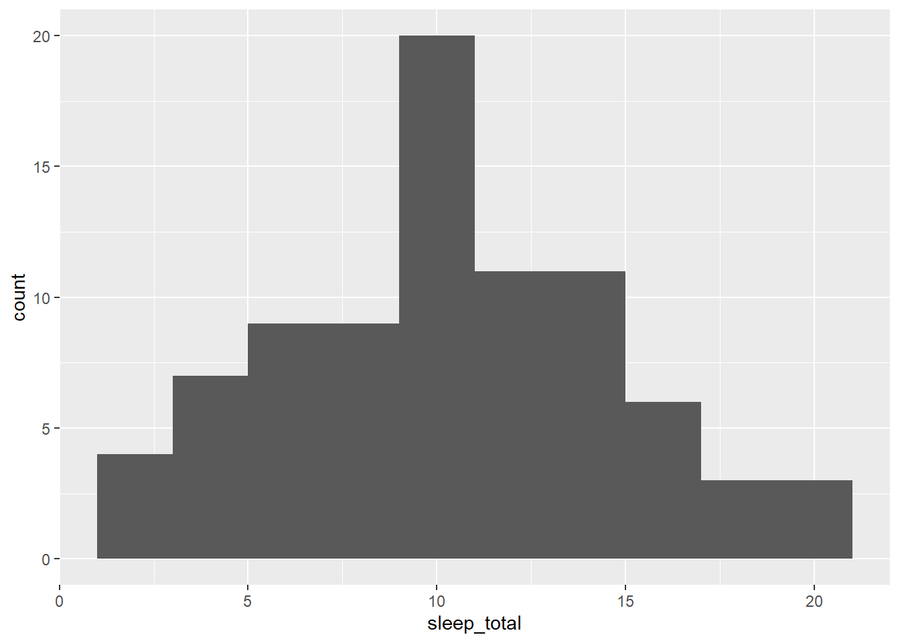
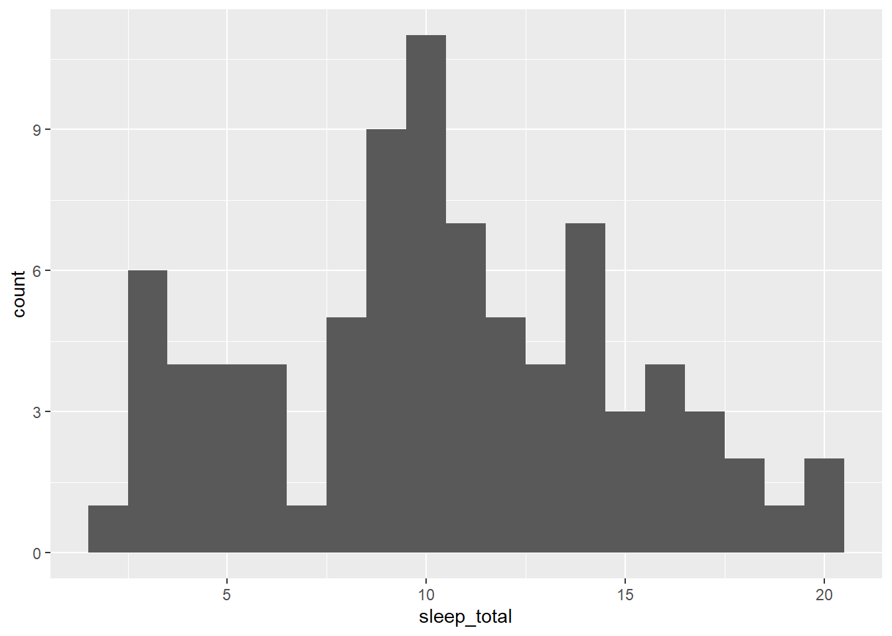
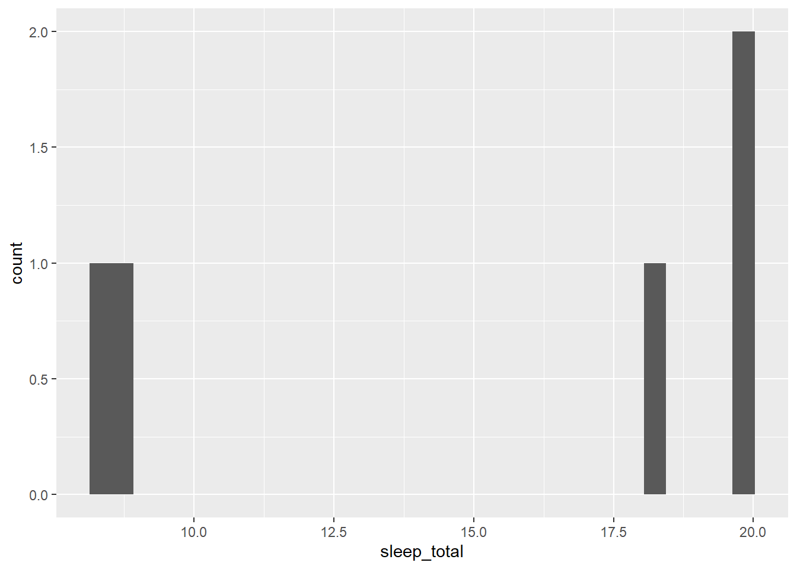
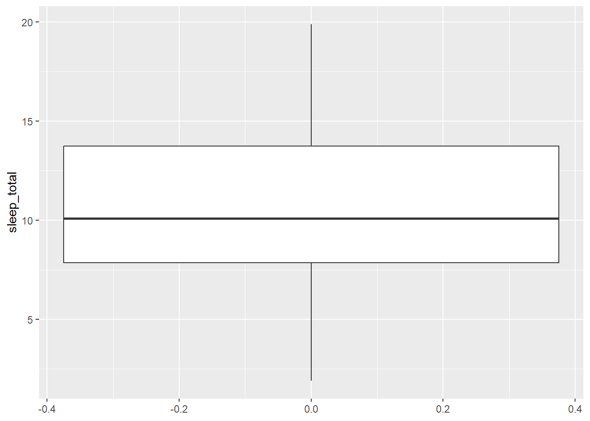
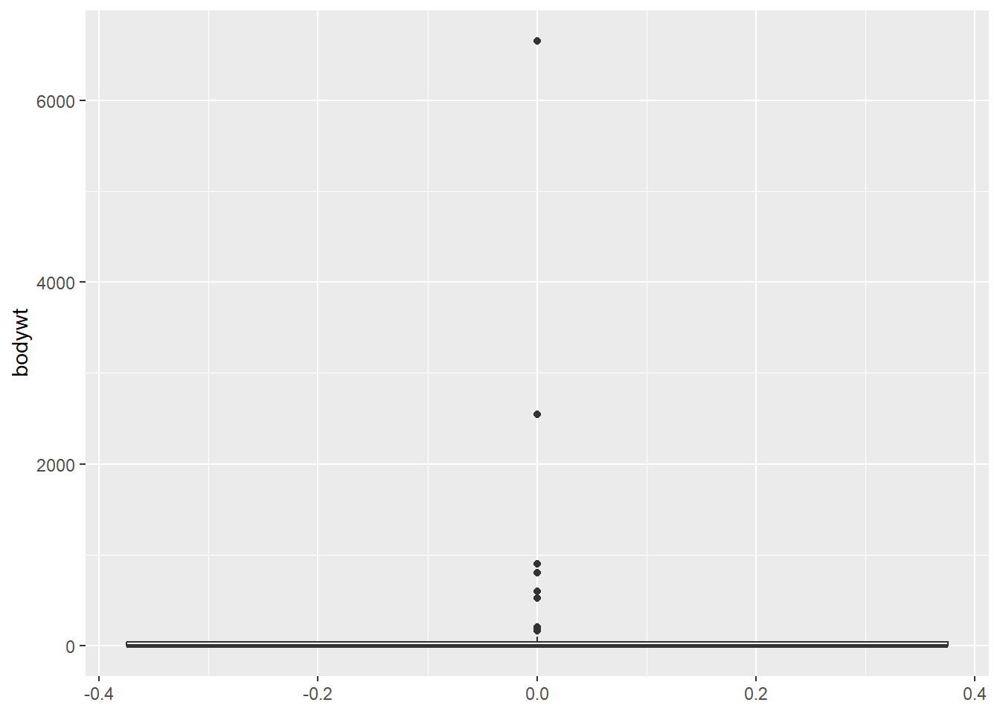
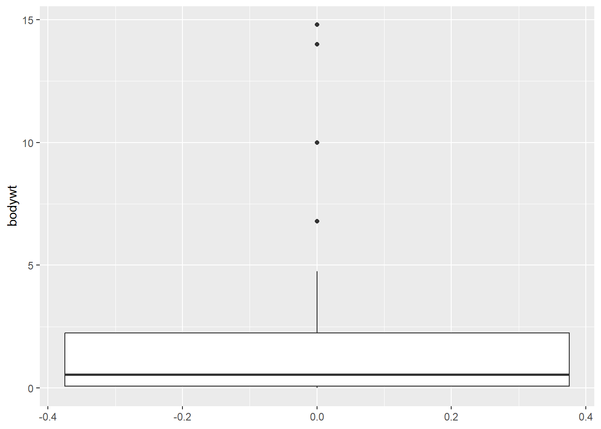

# Autonomía media del conjunto mtcars
mean(mtcars$mpg)[1] 20.090621. Resumen Estadístico
Rama de las matemáticas
Enfocada en la recogida y análisis de datos
Un informe estadístico nos permite obtener un resumen de la información que contienen los datos
Proporciona una serie de herramientas necesarias para explorar, resumir y poder así explotar grandes conjuntos de datos.
Conocer las probabilidades de que alguien compre un producto.
Averiguar si es más probable que compren usando un método de pago u otro.
Poder estimar cuántos huéspedes tendrá un hotel y qué decisiones en cuanto a precio y/o servicios es la óptima teniendo en cuenta lo anterior.
Saber cuántas tallas de pantalón distintas hay que fabricar para el 95 % de la población, y cuántas unidades de cada talla deben producirse.
A/B test: saber qué anuncio publicitario es más persuasivo para un producto concreto.
Saber la razón de la enorme popularidad de Juego de Tronos.
Sabemos que la violencia ayuda pero ¿es la verdadera razón del éxito de la serie?
Podríamos preguntar a todos los espectadores, pero pueden mentir o que su respuesta no revele la verdadera razón. Fiabilidad. No podemos afirmar que haya una relación directa entre el nivel de violencia y la audiencia
Describe y resume todos los datos disponibles. Ejemplo:
En una muestra grande, podemos hacer inferencias sobre la población total a partir de una muestra significativa.
Los datos numéricos pueden ser categorizados
Los datos categóricos se pueden representar como números o como texto
Ser capaz de identificar el tipo de dato, nos permitirá saber qué tipo de gráficas o resúmenes representa mejor la información
Ejemplo: Resumen o estadístico:
# Autonomía media del conjunto mtcars
mean(mtcars$mpg)[1] 20.09062Ejemplo: Representaciones gráficas
library(ggplot2)
ggplot(mtcars, aes(mpg, wt))+
geom_point()
Ejemplo: Tabla
library(kableExtra)
library(tidyverse)── Attaching core tidyverse packages ──────────────────────── tidyverse 2.0.0 ──
✔ dplyr 1.1.3 ✔ readr 2.1.4
✔ forcats 1.0.0 ✔ stringr 1.5.0
✔ lubridate 1.9.3 ✔ tibble 3.2.1
✔ purrr 1.0.2 ✔ tidyr 1.3.0
── Conflicts ────────────────────────────────────────── tidyverse_conflicts() ──
✖ dplyr::filter() masks stats::filter()
✖ dplyr::group_rows() masks kableExtra::group_rows()
✖ dplyr::lag() masks stats::lag()
ℹ Use the conflicted package (<http://conflicted.r-lib.org/>) to force all conflicts to become errorsmtcars %>%
head(4) %>%
kbl() %>%
kable_styling()| mpg | cyl | disp | hp | drat | wt | qsec | vs | am | gear | carb | |
|---|---|---|---|---|---|---|---|---|---|---|---|
| Mazda RX4 | 21.0 | 6 | 160 | 110 | 3.90 | 2.620 | 16.46 | 0 | 1 | 4 | 4 |
| Mazda RX4 Wag | 21.0 | 6 | 160 | 110 | 3.90 | 2.875 | 17.02 | 0 | 1 | 4 | 4 |
| Datsun 710 | 22.8 | 4 | 108 | 93 | 3.85 | 2.320 | 18.61 | 1 | 1 | 4 | 1 |
| Hornet 4 Drive | 21.4 | 6 | 258 | 110 | 3.08 | 3.215 | 19.44 | 1 | 0 | 3 | 1 |
Página 153 (Libro matemáticas mareaverde)
library(ggplot2)
msleep# A tibble: 83 × 11
name genus vore order conservation sleep_total sleep_rem sleep_cycle awake
<chr> <chr> <chr> <chr> <chr> <dbl> <dbl> <dbl> <dbl>
1 Cheet… Acin… carni Carn… lc 12.1 NA NA 11.9
2 Owl m… Aotus omni Prim… <NA> 17 1.8 NA 7
3 Mount… Aplo… herbi Rode… nt 14.4 2.4 NA 9.6
4 Great… Blar… omni Sori… lc 14.9 2.3 0.133 9.1
5 Cow Bos herbi Arti… domesticated 4 0.7 0.667 20
6 Three… Brad… herbi Pilo… <NA> 14.4 2.2 0.767 9.6
7 North… Call… carni Carn… vu 8.7 1.4 0.383 15.3
8 Vespe… Calo… <NA> Rode… <NA> 7 NA NA 17
9 Dog Canis carni Carn… domesticated 10.1 2.9 0.333 13.9
10 Roe d… Capr… herbi Arti… lc 3 NA NA 21
# ℹ 73 more rows
# ℹ 2 more variables: brainwt <dbl>, bodywt <dbl>Estructura del data frame:
str(msleep)tibble [83 × 11] (S3: tbl_df/tbl/data.frame)
$ name : chr [1:83] "Cheetah" "Owl monkey" "Mountain beaver" "Greater short-tailed shrew" ...
$ genus : chr [1:83] "Acinonyx" "Aotus" "Aplodontia" "Blarina" ...
$ vore : chr [1:83] "carni" "omni" "herbi" "omni" ...
$ order : chr [1:83] "Carnivora" "Primates" "Rodentia" "Soricomorpha" ...
$ conservation: chr [1:83] "lc" NA "nt" "lc" ...
$ sleep_total : num [1:83] 12.1 17 14.4 14.9 4 14.4 8.7 7 10.1 3 ...
$ sleep_rem : num [1:83] NA 1.8 2.4 2.3 0.7 2.2 1.4 NA 2.9 NA ...
$ sleep_cycle : num [1:83] NA NA NA 0.133 0.667 ...
$ awake : num [1:83] 11.9 7 9.6 9.1 20 9.6 15.3 17 13.9 21 ...
$ brainwt : num [1:83] NA 0.0155 NA 0.00029 0.423 NA NA NA 0.07 0.0982 ...
$ bodywt : num [1:83] 50 0.48 1.35 0.019 600 ...Resumen estadístico del data frame:
summary(msleep) name genus vore order
Length:83 Length:83 Length:83 Length:83
Class :character Class :character Class :character Class :character
Mode :character Mode :character Mode :character Mode :character
conservation sleep_total sleep_rem sleep_cycle
Length:83 Min. : 1.90 Min. :0.100 Min. :0.1167
Class :character 1st Qu.: 7.85 1st Qu.:0.900 1st Qu.:0.1833
Mode :character Median :10.10 Median :1.500 Median :0.3333
Mean :10.43 Mean :1.875 Mean :0.4396
3rd Qu.:13.75 3rd Qu.:2.400 3rd Qu.:0.5792
Max. :19.90 Max. :6.600 Max. :1.5000
NA's :22 NA's :51
awake brainwt bodywt
Min. : 4.10 Min. :0.00014 Min. : 0.005
1st Qu.:10.25 1st Qu.:0.00290 1st Qu.: 0.174
Median :13.90 Median :0.01240 Median : 1.670
Mean :13.57 Mean :0.28158 Mean : 166.136
3rd Qu.:16.15 3rd Qu.:0.12550 3rd Qu.: 41.750
Max. :22.10 Max. :5.71200 Max. :6654.000
NA's :27 Un histograma es una representación gráfica de la distribución de frecuencias de una variable aleatoria. Consiste en una sucesión de rectángulos levantados sobre un eje x que representa los valores de la variable y la altura representa el número de apariciones de dicho valor.
Cada rectángulo tiene un área proporcional a la frecuencia de valores observada en el intervalo sobre el que se levanta. En esta sección aprenderemos a construir un histograma con R.
ggplot(msleep, aes(x=sleep_total)) +
geom_histogram(bins=10)
¿Cuántas horas duermen diariamente los mamíferos? ¿Según el histograma, dónde está el centro de los datos?
ggplot(msleep, aes(x=sleep_total)) +
geom_histogram(binwidth = 1)
Página 160: Parámetros estadísticos
media <- mean(msleep$sleep_total)
media[1] 10.43373mediana <- median(msleep$sleep_total)
mediana[1] 10.1La moda es una medida de centralidad para variable categórica. Representa la categoría más frecuente. Si contamos la frecuencia con la que aparece cada valor de sleep_total
# La moda:
msleep %>%
count(sleep_total, sort = TRUE) %>%
head(1)# A tibble: 1 × 2
sleep_total n
<dbl> <int>
1 12.5 4tabla_frecuencias <- table(msleep$sleep_total)
moda <- as.numeric(names(tabla_frecuencias)[which.max(tabla_frecuencias)])
moda[1] 12.5# install.packages("DescTools")
library(DescTools)
DescTools::Mode(msleep$sleep_total)[1] 12.5
attr(,"freq")
[1] 4# install.packages("prettyR")
library(prettyR)
Attaching package: 'prettyR'The following object is masked from 'package:DescTools':
ModeprettyR::Mode(msleep$sleep_total)[1] "12.5"Para un valor numérico, generalmente no es una medida de centralidad que aporte información relevante. Sin embargo, si queremos analizar en nuestro data frame por la categoría “vore”, vemos que si tiene sentido:
msleep %>%
count(vore, sort = TRUE)# A tibble: 5 × 2
vore n
<chr> <int>
1 herbi 32
2 omni 20
3 carni 19
4 <NA> 7
5 insecti 5Vemos que el valor más frecuente en los datos estudiados en cuanto a la variable categórica “vore” es “herbi”
Como hemos podido ver en el histograma y en el cálculo de la media y la mediana, observamos que la media y la mediana e incluso la moda, son valores que se están en el centro de nuestra distribución de datos.
Sin embargo, si filtramos la distribución por los insectívoros:
msleep_insect <- msleep %>%
filter(vore == "insecti")
msleep_insect# A tibble: 5 × 11
name genus vore order conservation sleep_total sleep_rem sleep_cycle awake
<chr> <chr> <chr> <chr> <chr> <dbl> <dbl> <dbl> <dbl>
1 Big br… Epte… inse… Chir… lc 19.7 3.9 0.117 4.3
2 Little… Myot… inse… Chir… <NA> 19.9 2 0.2 4.1
3 Giant … Prio… inse… Cing… en 18.1 6.1 NA 5.9
4 Easter… Scal… inse… Sori… lc 8.4 2.1 0.167 15.6
5 Short-… Tach… inse… Mono… <NA> 8.6 NA NA 15.4
# ℹ 2 more variables: brainwt <dbl>, bodywt <dbl>ggplot(msleep_insect, aes(x=sleep_total)) +
geom_histogram()`stat_bin()` using `bins = 30`. Pick better value with `binwidth`.
Calculando de nuevo la media y la mediana:
msleep_insect %>%
summarize(media = mean(sleep_total), mediana = median(sleep_total))# A tibble: 1 × 2
media mediana
<dbl> <dbl>
1 14.9 18.1Observamos como ambos valores se alejan. En general, para datos simétricos, la media es mejor, aunque es muy sensible a valores extremos. Si los datos no son simétricos, la mediana es la medida de centralidad apropiada.
\(\sigma^{2} = {\frac{\sum_{i=1}^{n} (x_i - \mu)^2}{n}}\)
Calculamos la distancia media de cada uno de los valores respecto a la media:
dists <- msleep$sleep_total - mean(msleep$sleep_total)
dists [1] 1.66626506 6.56626506 3.96626506 4.46626506 -6.43373494 3.96626506
[7] -1.73373494 -3.43373494 -0.33373494 -7.43373494 -5.13373494 -1.03373494
[13] -0.43373494 2.06626506 -0.13373494 -2.13373494 -1.33373494 6.96626506
[19] -5.13373494 7.56626506 -6.53373494 9.26626506 -7.53373494 -7.33373494
[25] -0.33373494 0.46626506 4.46626506 2.06626506 -0.63373494 -8.53373494
[31] -7.73373494 -4.23373494 -4.13373494 -2.43373494 -0.93373494 -7.13373494
[37] 8.96626506 -0.33373494 3.76626506 3.86626506 2.36626506 2.06626506
[43] 9.46626506 4.16626506 0.56626506 -2.73373494 4.06626506 -2.03373494
[49] -6.63373494 -0.73373494 5.36626506 -0.03373494 3.06626506 -1.03373494
[55] -0.13373494 0.56626506 1.06626506 3.26626506 -6.93373494 -4.83373494
[61] 0.66626506 7.66626506 -5.03373494 2.56626506 -1.73373494 -0.83373494
[67] -2.03373494 0.86626506 0.16626506 6.16626506 3.36626506 5.46626506
[73] 2.36626506 -1.33373494 -1.83373494 5.36626506 -6.03373494 5.16626506
[79] -1.53373494 -5.23373494 -4.13373494 2.06626506 -0.63373494Elevamos al cuadrado:
squared_dists <- dists**2Calculamos el sumatorio:
sum_sq_dists <- sum(squared_dists)Dividimos entre n:
sum_sq_dists / nrow(msleep)[1] 19.56705Usando la función de R:
varianza_R <- var(msleep$sleep_total)
varianza_R[1] 19.80568¿Por qué esta diferencia?
sum_sq_dists / (nrow(msleep)-1)[1] 19.80568sum_sq_dists / (nrow(msleep)-1)[1] 19.80568varianza_R * (((nrow(msleep)) - 1) / (nrow(msleep)))[1] 19.56705\(s=\sqrt{{\frac{{\sum_{i=1}^{n}\left(x_{i}-\mu\right)^{2}}}{n-1}}}\)
\(\sigma=\sqrt{{\frac{{\sum_{i=1}^{n}\left(x_{i}-\mu\right)^{2}}}{n}}}\)
sqrt(var(msleep$sleep_total))[1] 4.450357sd(msleep$sleep_total)[1] 4.450357sqrt((sum((msleep$sleep_total - mean(msleep$sleep_total))**2))/(nrow(msleep)))[1] 4.423466\(R= max\{xi\}-min\{xi\}\)
max(msleep$sleep_total) - min(msleep$sleep_total)[1] 18En R nos devuelve un vector de 2 elementos, mínimo y máximo.
range(msleep$sleep_total)[1] 1.9 19.9Haciendo la diferencia:
range(msleep$sleep_total)[2]- range(msleep$sleep_total)[1][1] 18También conocido como desviación media absoluta.
\(R={\frac{{\sum_{i=1}^{n} | x_{i}-\mu |}}{n}}\)
Creamos la función error medio y calculamos el error medio de sleep_total:
mi_eam <- function(vect) {
dm <- vect - mean(vect)
errror <- mean(abs(dm))
return(errror)
}
mi_eam(msleep$sleep_total)[1] 3.566701La desviación estándar penaliza más los valores atípicos que los valores medios, mientras que el error medio penaliza las distancias por igual. Esto es debido a las distancias al cuadrado.
Los cuantiles son puntos tomados a intervalos regulares de la función de distribución de una variable aleatoria. El cuantil de orden p de una distribución (con 0 < p < 1) es el valor de la variable Xp que marca un corte de modo que una proporción p de valores de la población es menor o igual que Xp.
Los más usados son:

La función en R que permite calcular los valores cuantiles es:
quantile(msleep$sleep_total) 0% 25% 50% 75% 100%
1.90 7.85 10.10 13.75 19.90 Por defecto, el vector de cuantiles que se pasa como argumento probs en la función quantile(), es el de los cuartiles:
# Secuencia de 0 a 1 con saltos de 0.25
seq(0, 1, 0.25)[1] 0.00 0.25 0.50 0.75 1.00Los cuartiles, dividen los datos en 4 partes iguales, en nuestro caso, el 25 % de los datos se encuentran entre 1.90 y 7.85 horas. El siguiente 25 % de los datos entre 7.85 y 10.1, que se corresponde con la mediana, la cual como sabemos, divide los datos en dos partes iguales. El tercer cuartil corresponde a los datos entre la mediana y 13.75 y por último, entre 13.75 y 19.90.
deciles <- seq(0, 1, 0.1)
quantile(msleep$sleep_total, probs = deciles) 0% 10% 20% 30% 40% 50% 60% 70% 80% 90% 100%
1.90 3.92 6.24 8.52 9.48 10.10 11.14 12.80 14.40 15.88 19.90 percentiles <- seq(0, 1, 0.01)
quantile(msleep$sleep_total, probs = percentiles) 0% 1% 2% 3% 4% 5% 6% 7% 8% 9% 10%
1.900 2.556 2.828 2.946 3.028 3.120 3.284 3.448 3.668 3.838 3.920
11% 12% 13% 14% 15% 16% 17% 18% 19% 20% 21%
4.008 4.336 4.928 5.248 5.300 5.312 5.394 5.552 5.948 6.240 6.300
22% 23% 24% 25% 26% 27% 28% 29% 30% 31% 32%
6.328 6.902 7.476 7.850 8.096 8.314 8.396 8.400 8.520 8.642 8.700
33% 34% 35% 36% 37% 38% 39% 40% 41% 42% 43%
8.712 8.876 9.040 9.100 9.202 9.400 9.400 9.480 9.562 9.644 9.726
44% 45% 46% 47% 48% 49% 50% 51% 52% 53% 54%
9.800 9.800 9.944 10.054 10.100 10.100 10.100 10.264 10.300 10.346 10.456
55% 56% 57% 58% 59% 60% 61% 62% 63% 64% 65%
10.630 10.876 10.974 11.000 11.038 11.140 11.304 11.468 11.896 12.292 12.500
66% 67% 68% 69% 70% 71% 72% 73% 74% 75% 76%
12.500 12.500 12.500 12.674 12.800 12.844 13.020 13.430 13.636 13.750 13.928
77% 78% 79% 80% 81% 82% 83% 84% 85% 86% 87%
14.214 14.296 14.378 14.400 14.442 14.524 14.618 14.864 14.900 15.264 15.668
88% 89% 90% 91% 92% 93% 94% 95% 96% 97% 98%
15.800 15.800 15.880 16.334 16.776 17.104 17.448 17.940 18.072 18.802 19.508
99% 100%
19.736 19.900 El rango intercuartil o IQR, es otra medida de dispersión. Se corresponde con la distancia entre el primer y tercer cuartil, o lo que es lo mismo entre el percentil 25º y 75º. En el diagrama de caja y bigote representa los límites de la caja.
Volviendo a nuestro ejemplo, calculamos la diferencia entre los quantiles 0.75 y 0.25
q1 <- quantile(msleep$sleep_total, 0.25)
q3 <- quantile(msleep$sleep_total, 0.75)
iqr <- q3 - q1
iqr75%
5.9 Los valores atípicos se encuentran en el rango que se aleja 1.5 veces el rango intercuartil del primer y tercer cuartil:
Si nos fijamos en la variable peso del data frame: msleep$bodywt y Calculamos q1 y q3
q1 <- quantile(msleep$bodywt, 0.25)
q1 25%
0.174 q3 <- quantile(msleep$bodywt, 0.75)
q3 75%
41.75 iqr <- q3 - q1
iqr 75%
41.576 atip_bajo <- q1 - 1.5*iqr
atip_bajo 25%
-62.19 atip_alto <- q3 + 1.5*iqr
atip_alto 75%
104.114 ¿Tiene sentido el atípico bajo?
msleep %>% filter(bodywt < atip_bajo | bodywt > atip_alto ) %>%
select(name, vore, sleep_total, bodywt) %>%
head()# A tibble: 6 × 4
name vore sleep_total bodywt
<chr> <chr> <dbl> <dbl>
1 Cow herbi 4 600
2 Asian elephant herbi 3.9 2547
3 Horse herbi 2.9 521
4 Donkey herbi 3.1 187
5 Giraffe herbi 1.9 900.
6 Pilot whale carni 2.7 800 msleep %>% filter(bodywt < atip_bajo | bodywt > atip_alto ) %>%
select(name, vore, sleep_total, bodywt) %>%
tail()# A tibble: 6 × 4
name vore sleep_total bodywt
<chr> <chr> <dbl> <dbl>
1 Pilot whale carni 2.7 800
2 African elephant herbi 3.3 6654
3 Tiger carni 15.8 163.
4 Lion carni 13.5 161.
5 Brazilian tapir herbi 4.4 208.
6 Bottle-nosed dolphin carni 5.2 173.Los diagramas de caja y bigote utilizan los cuartiles para representar gráficamente la dispersión de los datos. La caja muestra los valores comprendidos entre los cuartiles 1 y 3, la línea interna de la caja representa la mediana.
ggplot(msleep, aes(y = sleep_total)) +
geom_boxplot()
En el diagrama de caja y bigote, los valores fuera del rango intercuartil no considerados atípicos, se representan con una línea superior y otra inferior a continuación de la caja. Los valores considerados atípicos, se representan mediante puntos:
ggplot(msleep, aes(y = bodywt)) +
geom_boxplot()
Si reducimos la muestra a los mamíferos pequeños (menos de 20kg):
msleep %>% filter(bodywt < 20 ) %>%
ggplot(aes(y = bodywt)) +
geom_boxplot()
Vemos que los datos son mucho menos dispersos y el diagrama se puede visualizar correctamente